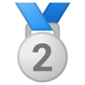
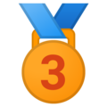
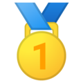

2019
XIV Puchar Świata siatkarzy w Japonii
XXXI Mistrzostwa Europy w Piłce Siatkowej Mężczyzn – EuroVolley 2019 – we Francji, Belgii, Słowenii i Holandii
II Finał Siatkarskiej Ligi Narodów Mężczyzn w Stanach Zjednoczonych
Mistrzostwa Europy U17 w piłce siatkowej w Bułgarii (minikadeci)
XXX Letnia Uniwersjada – turniej mężczyzn – Włochy
2018
XIX Mistrzostwa Świata w Piłce Siatkowej Mężczyzn we Włoszech i Bułgarii
Mistrzostwa Europy U19 w piłce siatkowej w Albanii (juniorki)
Mistrzostwa Europy Wschodniej (EEVZA) U14 w piłce siatkowej w Polsce (minikadetki)
Mistrzostwa Europy Wschodniej (EEVZA) U15 w piłce siatkowej w Armenii (minikadeci)
Mistrzostwa Europy Wschodniej (EEVZA) U16 w piłce siatkowej na Ukrainie (kadetki)
Mistrzostwa Europy Wschodniej (EEVZA) U17 w piłce siatkowej w Estonii (kadeci)
2017
Mistrzostwa świata U21 w piłce siatkowej w Czechach (juniorzy)
2016
Mistrzostwa Europy U20 w piłce siatkowej w Bułgarii (juniorzy)
Mistrzostwa Europy Wschodniej (EEVZA) U17 w piłce siatkowej w Estonii (minikadeci)
Mistrzostwa Europy Wschodniej (EEVZA) U17 w piłce siatkowej w Polsce (minikadetki)
Mistrzostwa Europy Wschodniej (EEVZA) U17 w piłce siatkowej na Łotwie (minikadeci)
Mistrzostwa Europy Wschodniej (EEVZA) U16 w piłce siatkowej w Rosji (minikadetki)